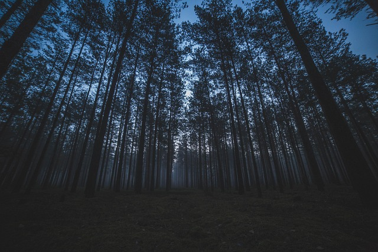

The Power Of The Dark

You approach like fire's fierce blaze,
With apocalyptic desire ablaze.
And thus the world comes to an end,
Death's gaze in your eyes transcend.
My life, on the precipice of truth,
Rendered meaningless to heedless youth.
Despair's sword pierces my frozen heart,
Like Excalibur, tearing enemies apart.
Winter's breath whispers in my ear,
Your words, a storm that fuels my tears.
My blood, a wine poured from your glass,
Thoughts scattered amidst chaos amassed.
On bended knees, it seems I pray,
A puppet for your games, you hold sway.
Your kingdom built on vengeance's call,
Between heaven and hell, you hold them all.
Even Zeus flees from your audacity,
The Devil himself shuns your cruelty.
The Darkness Inside

Sometimes I feel the darkness near,
Whispering, catching dreams so dear.
Once alive, now turned to dust,
Moments of doubt reduced to rust.
But even when the light comes in,
Through the cracks upon the skin,
The darkness lingers, never fades,
Its shadowy veil forever sways.
I saw a candle in the room,
Its flame aglow, dispelling gloom,
And shadows danced upon the walls,
As sadness echoed down the halls.
And then I opened up my eyes,
To nothingness, devoid of skies,
A coldness coursing through my veins,
A deathly chill that still remains.
Darkest Sight

I can see, deep in your eyes
The darkness staring at me
Like an abysm in the deepest ocean
Collecting my soul
Tearing apart my existence
Harvesting my feelings
And giving my long-gone innocence to the Gods
Nothing it was left of myself
The emptiness lingers inside me
Like an echo in a Cathedral
Where people go desperate
Looking for salvation to their sins
And my sins are the memories I keep
Those memories of you
The existence of everything seems hoax
My desire deeply craves your desire
Even if you desire to destroy me
The only thing that matters it is being used
Used by you only, for your games for your insanity
For your distorted thoughts and feelings, you have inside